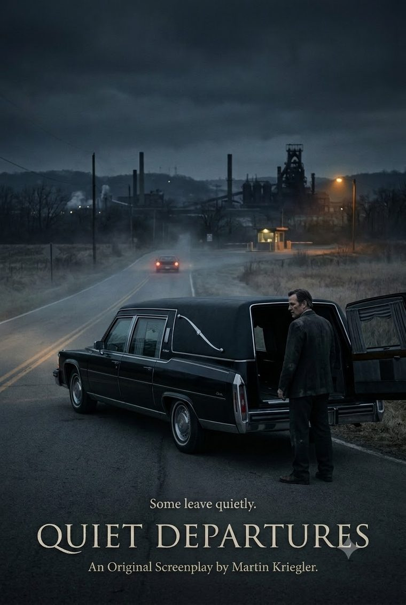

Quiet Departures
Weirton, West Virginia — one winter, mid-2020s
Marv Coyle has buried this town’s dead for thirty years. He is the man people call at three in the morning, the one who knows which hymn a widow needs before she does. He is also three months from losing the funeral home his grandfather built. When his old driver dies, Marv finds a coffee can of cash in a drawer and learns what else has been riding in his caskets, and for whom. He tells himself it is once. Nobody stops a hearse. Nobody weighs the dead. By the time the debt is paid and the reason for it is gone, the runs have not stopped, and a man across the river has begun to take an interest in how good Marv is at being trusted — and something is coming that will require him to look, at last, straight at what his own hands have done.
Find it on The Black List
